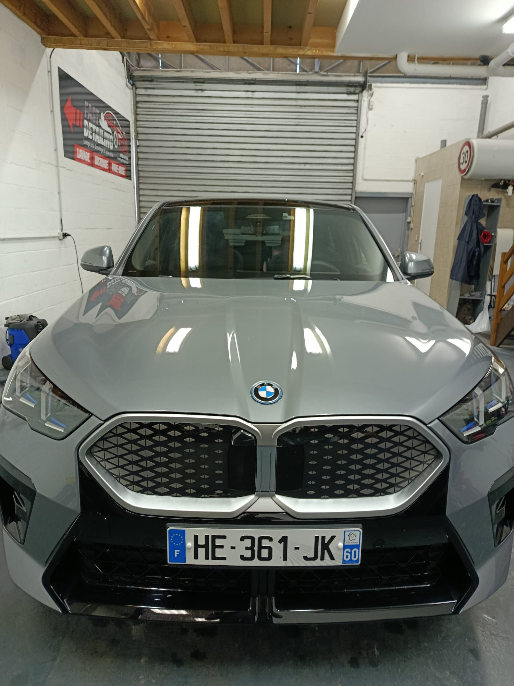
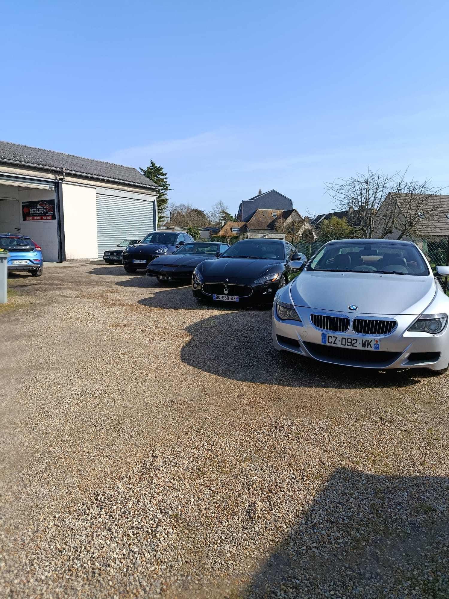
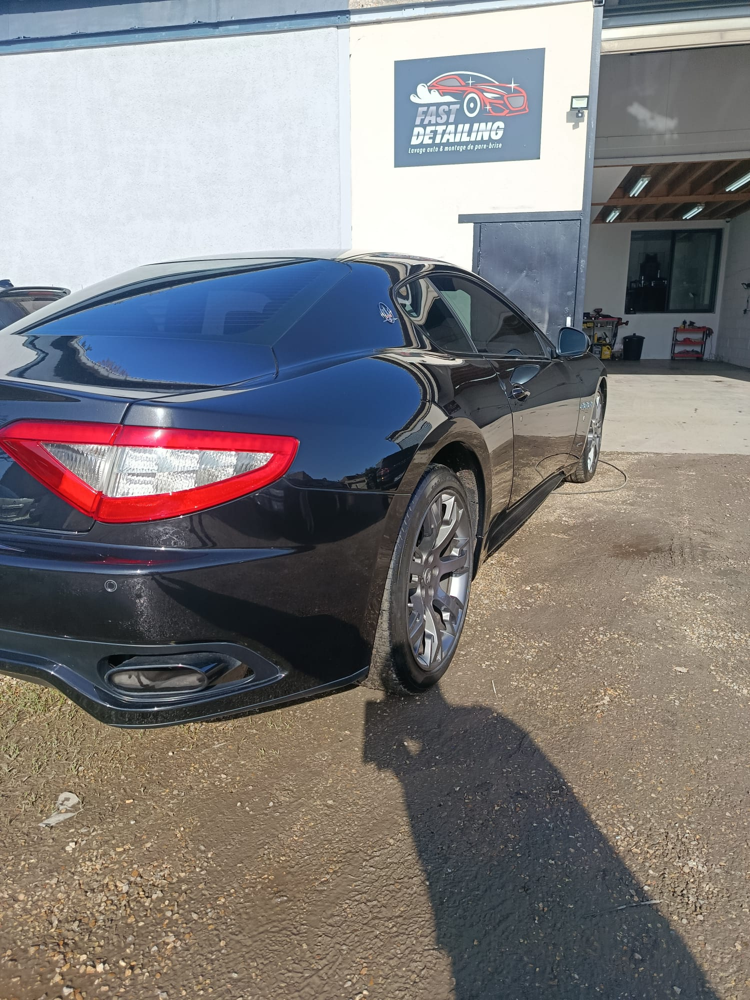
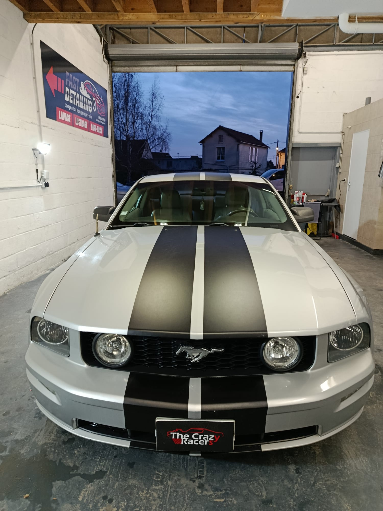
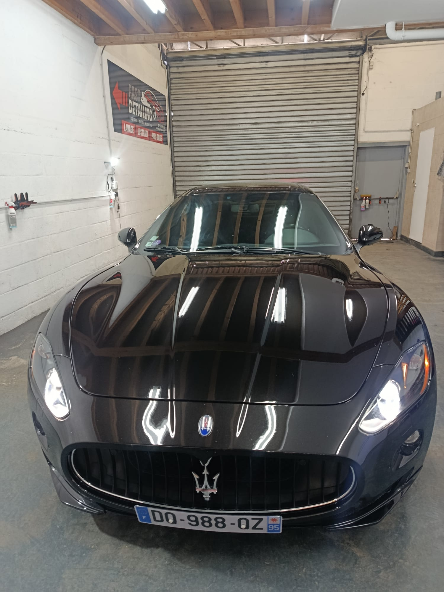

Matériel professionnel, gestes précis et rendu haut de gamme sur chaque véhicule.
Atelier detailing local
Redonnez à votre véhicule un aspect neuf
Detailing et rénovation automobile à Gisors, en Eure (Normandie): finitions soignées, reflets carrosserie premium et rendu valorisant dès le premier regard.
- Intervention locale
- Travail soigné
- Résultat valorisant
- Sur rendez-vous
Atelier local sur rendez-vous, lundi au samedi.

Atelier sérieux et régulier
Chaque intervention suit un protocole précis, de l'inspection au contrôle final des détails.
Passion automobile
Un detailing orienté esthétique, pour redonner du caractère et de la valeur à votre voiture.
Produits professionnels
Finition soignée
Avis clients Google
Parcours
Découvrir l'univers Fast Detailing
Commencez par les prestations et les preuves visuelles, puis avancez vers un contact en toute confiance.
Voir toutes les prestations
Nettoyage intérieur, extérieur, polish, optiques, vitres teintées, moto et pare-brise.
Galerie filtrable
Toutes les photos classées par type d’intervention pour une consultation rapide.
Comparatifs interactifs
Glissez le curseur sur des interventions réelles pour juger la qualité des finitions.
Photos réelles
Un aperçu plus concret de vos véhicules
Une sélection courte de photos authentiques pour montrer la qualité du travail sans charger la page.




Avis Google
Les retours clients comptent
Consultez les avis Google pour voir les retours sur la qualité de prise en charge et le résultat final.
Pourquoi nous choisir
Un atelier local sérieux à Gisors
Une approche artisanale, des standards premium et une exécution précise pour chaque véhicule confié.
Travail soigné
Préparation minutieuse, contrôle visuel et finitions propres sur chaque zone.
Produits professionnels
Gamme adaptée aux surfaces intérieures et extérieures pour un rendu durable.
Basé à Gisors
Interventions locales à Gisors, Étrépagny, Trie-Château et Magny-en-Vexin.
Devis gratuit
Conseil clair selon l'état réel du véhicule et vos objectifs esthétiques.
Expertise detailing
Rénovation automobile, polish, intérieur premium et optiques avec méthode.
Satisfaction client
Résultat lisible, progression visible et accompagnement humain du début à la fin.
⭐ 5/5 sur Google · Avis clients vérifiés
Ils nous font confiance
Des clients satisfaits à Gisors et aux alentours. Avis clients Fast Detailing Gisors autour du detailing automobile Gisors et de la rénovation automobile Gisors.
Contact
Contact rapide
Une fois votre besoin défini, choisissez le canal de contact adapté. Réponse claire, locale et sur rendez-vous.
Telephone
Horaires
Lundi au samedi
09h00 - 19h00
Zone d'intervention
Gisors, Etrepagny, Trie-Chateau, Magny-en-Vexin